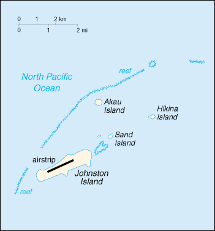

(territory of the US)
|
Johnston Atoll (territory of the US) |
|
| Introduction Geography People Government Economy Communications Transportation Military Transnational Issues | ||
|  | ||
| Johnston Atoll | Introduction | Top of Page |
| Background: | Both the US and the Kingdom of Hawaii annexed Johnston Atoll in 1858, but it was the US that mined the guano deposits until the late 1880s. The US Navy took over the atoll in 1934, and subsequently the US Air Force assumed control in 1948. The site was used for high altitude nuclear tests in the 1950s and 1960s, and until late in 2000 the atoll was maintained as a storage and disposal site for chemical weapons. Munitions destruction is now complete, and cleanup and closure of the facility is progressing. |
| Johnston Atoll | Geography | Top of Page |
| Location: | Oceania, atoll in the North Pacific Ocean 717 NM (1328 km) southwest of Honolulu, Hawaii, about one-third of the way from Hawaii to the Marshall Islands |
| Geographic coordinates: | 16 45 N, 169 31 W |
| Map references: | Oceania |
| Area: |
total:
2.8 sq km
land: 2.8 sq km water: 0 sq km |
| Area - comparative: | about 4.7 times the size of The Mall in Washington, DC |
| Land boundaries: | 0 km |
| Coastline: | 10 km |
| Maritime claims: |
exclusive economic zone:
200 NM
territorial sea: 12 NM |
| Climate: | tropical, but generally dry; consistent northeast trade winds with little seasonal temperature variation |
| Terrain: | mostly flat |
| Elevation extremes: |
lowest point:
Pacific Ocean 0 m
highest point: Summit Peak 5 m |
| Natural resources: | guano deposits worked until depletion about 1890, terrestrial and aquatic wildlife |
| Land use: |
arable land:
0%
permanent crops: 0% permanent pastures: 0% forests and woodland: 0% other: 100% |
| Irrigated land: | 0 sq km (1998) |
| Natural hazards: | NA |
| Environment - current issues: | no natural fresh water resources |
| Geography - note: | strategic location in the North Pacific Ocean; Johnston Island and Sand Island are natural islands, which have been expanded by coral dredging; North Island (Akau) and East Island (Hikina) are manmade islands formed from coral dredging; egg-shaped reef is 34 km in circumference; closed to the public; former US nuclear weapons test site; site of Johnston Atoll Chemical Agent Disposal System (JACADS); some low-growing vegetation |
| Johnston Atoll | People | Top of Page |
| Population: |
no indigenous inhabitants
note: in previous years, there was an average of 1,100 US military and civilian contractor personnel present; as of 1 October 2000, population decreased to approximately 970 when US Army Chemical Activity Pacific (USACAP) departed (January 2001 est.) |
| Population growth rate: | -5.94% (2001 est.) |
| Johnston Atoll | Government | Top of Page |
| Country name: |
conventional long form:
none
conventional short form: Johnston Atoll |
| Dependency status: | unincorporated territory of the US; administered from Washington, DC, by Pacific Air Forces, Hickam AFB, and the Fish and Wildlife Service of the US Department of the Interior as part of the National Wildlife Refuge system |
| Legal system: | the laws of the US, where applicable, apply |
| Flag description: | the flag of the US is used |
| Johnston Atoll | Economy | Top of Page |
| Economy - overview: | Economic activity is limited to providing services to US military personnel and contractors located on the island. All food and manufactured goods must be imported. |
| Electricity - production: | approximately 1,000,000 kWh weekly; note - there are six 25,000 kWh generators supplied by the base operating support contractor (1999) |
| Electricity - consumption: | NA kWh |
| Johnston Atoll | Communications | Top of Page |
| Telephone system: |
general assessment:
13 outgoing and 10 incoming commercial lines; adequate telecommunications
domestic: 60-channel submarine cable, 22 DSN circuits by satellite, Autodin with standard remote terminal, digital telephone switch, Military Affiliated Radio System (MARS station), UHF/VHF air-ground radio, a link to the Pacific Consolidated Telecommunications Network (PCTN) satellite international: NA |
| Radio broadcast stations: | AM NA, FM NA, shortwave NA |
| Television broadcast stations: | commercial satellite television system, with 16 channels (1997) |
| Internet Service Providers (ISPs): | NA |
| Johnston Atoll | Transportation | Top of Page |
| Waterways: | none |
| Ports and harbors: | Johnston Island |
| Airports: | 1; note - six flights per week; three commercial, three military (2001 est.) |
| Airports - with paved runways: |
total:
1
2,438 to 3,047 m: 1 (2000 est.) |
| Johnston Atoll | Military | Top of Page |
| Military - note: | defense is the responsibility of the US |
| Johnston Atoll | Transnational Issues | Top of Page |
| Disputes - international: | none |
{kind=link}
{kind=link}